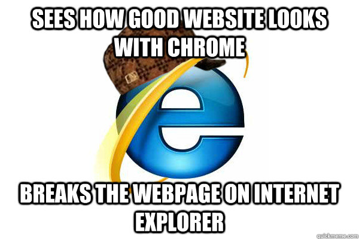

So here we are, Responsive Web Design! This is a crucial set of tools for people to make our lives on the web easier. Not only can one read easier, but it helps you keep people on your site longer! Attentions spans are lowering, and we must do what we can to retain our viewers!
...and that starts with YOU!
